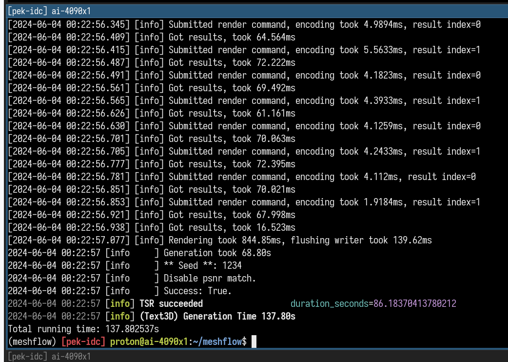
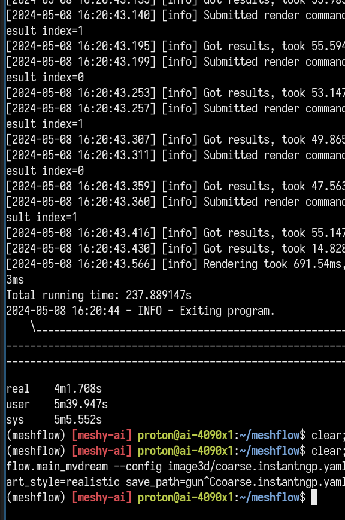

overmind 是啥？
- 减少模型的加载时间
- 最初是为了混合部署标准的 coarse 和 lowpoly coarse
- 翻 torch 的文档发现了 shared mem 于是觉得这个事可以搞
效果比对
python -m meshflow.main_mvdream --config image3d/coarse.instantngp.yaml seed=1234 input=~/gun.jpg art_style=realistic


典型日志
cat /tmp/overmind.*.log

如何使用
# Use monkey patching
import overmind.api
overmind.api.monkey_patch_all()
pipeline = DiffusionPipeline.from_pretrained(
"stabilityai/stable-diffusion-xl-refiner-1.0"
)
# ... or explicitly load
from overmind.api import load
pipeline = load(
DiffusionPipeline.from_pretrained,
"stabilityai/stable-diffusion-xl-refiner-1.0",
)
如何工作
(Oversimplified)
- 把函数和参数都 pickle 起来，发一个 RPC 给 overmind daemon
- 如果没有 overmind daemon 就拉起来一个
- 在 overmind 的进程中执行发过来的函数
- 把结果再 pickle 一下返回给 client
……但是要用 torch 给的 Pickler
from diffusers import DiffusionPipeline
pipe = DiffusionPipeline.from_pretrained(
"stabilityai/stable-diffusion-xl-refiner-1.0"
)
# This results a 12GB pickle, costs 14.2s
import pickle
pickle.dumps(pipe)
# This results a 2.5MB pickle, costs 1.55s
from torch.multiprocessing.reductions \
import ForkingPickler
ForkingPickler.dumps(pipe)
- torch 的 Pickler 会把 tensor 数据放到 shm 中
- ls /dev/shm 可以看到大量的 torch shm 文件
- 所以 torch 的 pickle 中没有数据，但是有指向 shm 的指针
一些细节
aka. 遇到的坑，和特别的解决方案